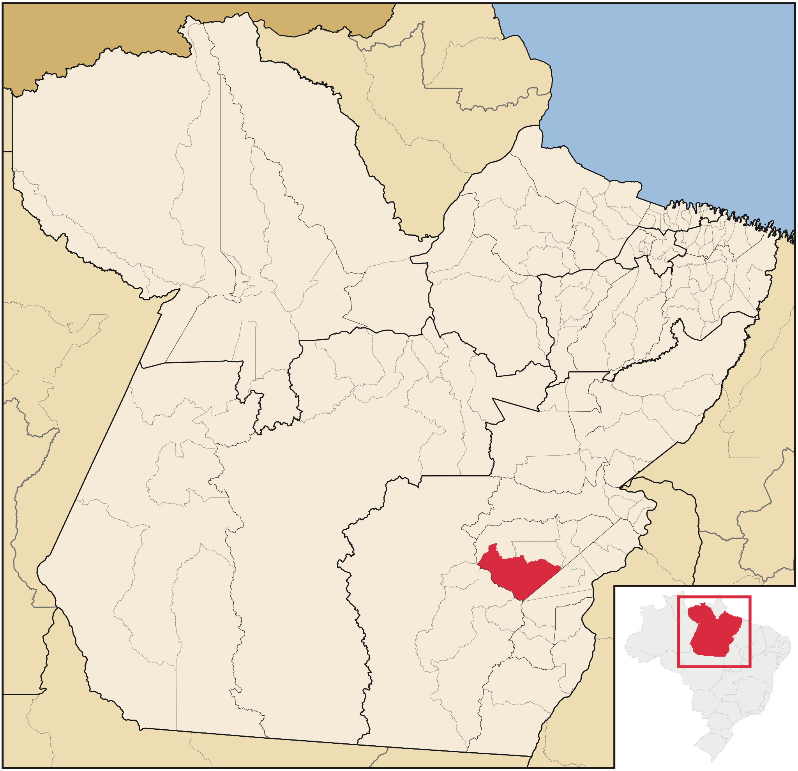

Localização e paisagem
Água Azul do Norte está no sudeste do Pará, na Região Geográfica Imediata de Xinguara e Intermediária de Redenção. O IBGE informa área territorial de 7.113,956 km². As coordenadas e altitudes detalhadas citadas no dossiê não foram confirmadas em base cartográfica oficial nesta revisão; para localização e limites, consulte o IBGE Cidades ↗.
Mapa do município no estado do Pará

O mapa localiza o município dentro do Pará; para limites e dados atuais, consulte as plataformas cartográficas.
Mapas interativos e fontes cartográficas
Explore a localização, os limites, as vias e os dados territoriais nos mapas e serviços externos.
Relevo, solos e geologia
O dossiê descreve paisagens de colinas e serras na região da Província Mineral de Carajás e cita a Serra da Seringa. Tipos de solo, cotas de altitude e formações geológicas em escala municipal não foram confirmados em mapa técnico nesta revisão; consulte os mapas do IBGE/BDiA ↗ e os dados geológicos do Serviço Geológico do Brasil ↗ antes de utilizar classificações detalhadas.
Clima
Não foi possível associar as faixas numéricas de temperatura e chuva do dossiê a uma estação meteorológica e a um período de referência. Para evitar apresentar estimativas como medições locais, a página de clima agora explica essa limitação e resume apenas o padrão sazonal informado. Veja a página dedicada ao clima.
Hidrografia
O dossiê local menciona cursos d’água como os rios Azul, Água Preta, Itacaiúnas e Cateté, além dos igarapés Pau de Remo e Água Azul. A rede hidrográfica e as relações de nascente e confluência precisam ser conferidas em cartografia oficial; não reproduzimos como fato confirmado o esquema de formação do Itacaiúnas sem uma fonte hidrográfica rastreável. Consulte a Agência Nacional de Águas e Saneamento Básico ↗ e o BDiA/IBGE ↗.
Meio ambiente e território indígena
A Terra Indígena Xikrin do Rio Cateté é uma referência territorial da região. Área, situação jurídica e interseção com limites municipais não são afirmadas aqui sem conferência da base geoespacial oficial mais recente. Consulte o portal geoespacial da FUNAI ↗ e respeite as informações e perspectivas do povo Xikrin.
Limites territoriais, áreas protegidas, dados de clima e hidrografia devem ser conferidos em mapas e bases oficiais. Este portal reproduz a descrição recebida, não substitui documentação cartográfica.